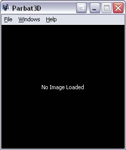

The Overview Window is the first window to appear when Parbat3D is launched.
The Overview Window contains the file menu. See the File Menu section for more details.
Once an image is opened, other windows will appear. See the Loading an Image section for more details.

The image window contains the loaded image and can be zoomed and panned. See the Navigating an image section for more details.

The Tools window contains different tools that can be selected by tabs.
The Display tab is used for assigning image bands to display bands. See the Assigning Image Bands to Display Bands section for more details.

The Query tab is used for Querying the values of pixels in the image window. See the Querying Pixels section for more details.

The Image tab is used for displaying information about the loaded image file. See the Image File Information section for more details.

The Feature tab is used for creating a Feature Space scatterplot. See the Feature Space section for more details.